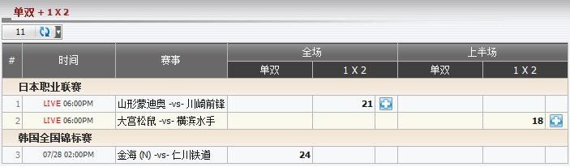
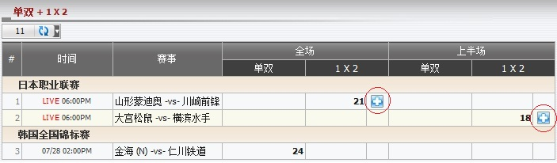
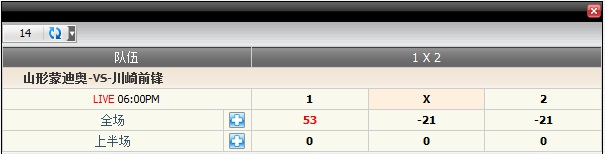
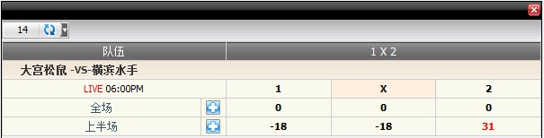

单双 + 1 X 2
定义:
显示基于注单占成数的总代理输赢, 投注类型之: 上半场及全场单双, 1X2 (图1.1)。

图 1.1
- 对于 日本职业联赛, member1 投注两场赛事 山形蒙迪奥 -vs- 川崎前锋 和 大宫松鼠 -vs- 横滨水手, 细节如下:
- 第一投注: 投注额 = 70, 赔率 = 3.52, 投注类型: 1x2, 全场, 选择: 全场.1, 总代理占成 = 30% --> 总代理基于占成数所得 = 70 * 30% = 21
- 第二投注: 投注额 = 60, 赔率 = 2.7, 投注类型: 1x2, 上半场, 选择: HT.2, 总代理占成 = 30% --> 总代理基于占成数所得 = 60 * 30% = 18
- 对于 韩国全国锦标赛, member1 投注于赛事 金海 (中) -vs- 仁川铁道, 细节如下:
- 第一投注: 投注额 = 80, 赔率 = 0.96, 投注类型: 单双, 全场, 投注 單, 总代理占成 = 30% --> 总代理基于占成数所得 = 80*30% = 24
预测功能
此功能帮助总代理根据主队比分, 客队比分演算输/赢数额。要查看输赢预测, 点击 "+" 标记

图 1.2
-
全场 1x2: 在这个例子中, member1 投注于赛事 山形蒙迪奥 -vs- 川崎前锋, 投注额 = 70, 选择: 全场.1, 赔率 = 3.52, 投注类型 = 全场 1x2, 总代理占成 = 30%

图 1.3
这是 1x2 的全场结果预测及详情如下:
- 1: 53 --> 若主队赢, 那么总代理将会输: 70 * 30% * (3.52 - 1) = 53.
- x: 21 --> 若结果为和局, 那么总代理将会赢: 70 * 30% = 21.
- 2: 21 --> 若客队赢, 那么总代理将会赢: 70 * 30% = 21.
-
上半场 1x2: 在这个例子中, member1 投注于赛事 大宫松鼠 -vs- 横滨水手, 投注额 = 60: 上半场.2, 赔率 = 2.7, 投注类型 = 上半场 1x2, 总代理占成 = 30%。

图 1.4
这是 1x2 的上半场结果预测及详情如下:
- 1: 18 --> 若主队赢, 那么总代理将会赢: 60 * 30% = 18.
- x: 18 --> 若结果为和局, 那么总代理将会赢: 60 * 30% = 18.
- 2: 31 --> 若客队赢,那么总代理将会输: 60 * 30% * (2.7 - 1) = 31.